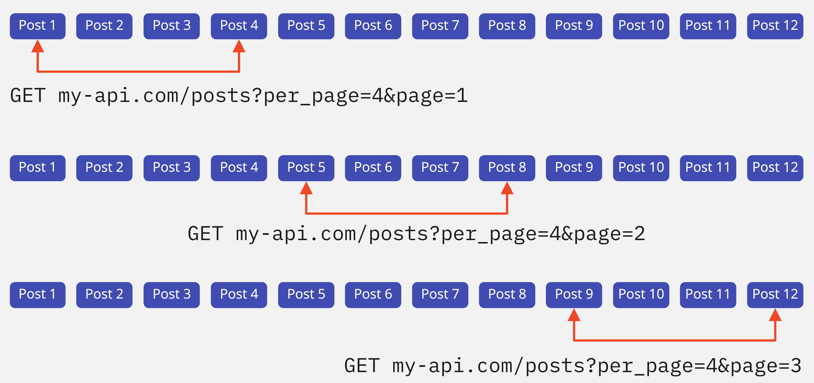

Пагінація
База даних може зберігати колекції, що містять сотні мільйонів записів. Тому повертати всю колекцію на кожен GET-запит - занадто ресурсозатратно. Розмір тіла відповіді буде занадто великий, і час запиту затягнеться на десятки секунд, або навіть хвилини - чим більше даних у відповіді від бекенду, тим довше вона передається мережею.
До того ж, необхідно думати про користувачів - навряд чи їм потрібні усі мільйони записів відразу. Обробка такої великої кількості даних у відповіді і відображення інтерфейсу потребує величезних ресурсів пристрою, на якому переглядається веб-сторінка. За статистикою, користувачі знаходять цікаву для них інформацію на декількох перших екранах.
Припустимо наш бекенд my-api.com зберігає дуже велику колекцію постів у ресурсі /posts, яку зобразимо дванадцятьма елементами на ілюстрації.

На кожен GET-запит бекенду доведеться повернути всю колекцію, і ми зіткнемося з проблемами, описаними раніше. Для їх вирішення існує пагінація - прийом, за яким, на перший і кожен наступний GET-запит повертається не вся колекція, а певна її частина. Пагінація реалізується на бекенді і використовується на фронтенді за допомогою спеціальних параметрів запиту.
Кількість елементів відповіді
Перший параметр визначає кількість елементів у відповіді від бекенду. Нехай, у нашому випадку, він називається per_page. Стандарт іменування параметрів пагінації відсутній, тому їх імена залежать від бекенд розробника.
У такому GET-запиті бекенд поверне не всю колекцію з дванадцяти елементів, а тільки перші чотири. Якщо передати від'ємне значення або значення більше кількості елементів в колекції, то бекенд може відповісти по-різному - проігнорувати їх або повернути помилку 400 (BAD REQUEST), залежно від його реалізації.
Публічний JSONPlaceholder API так само підтримує пагінацію - кількість елементів у відповіді контролюється параметром _limit. Всього колекція / posts налічує сто елементів. Змінюйте значення параметра _limit в прикладі і досліджуйте відповідь бекенду в інтерфейсі і на вкладці Network.
See the Pen lesson-20-per-page-parameter by goit-academy (@goit-academy) on CodePen.
Номер групи елементів
Вказавши бажану кількість елементів у відповіді, ми завжди отримаємо однаковий результат - перші per_page елементів колекції, так звану першу групу або «сторінку». Другий параметр пагінації контролює зміщення всередині колекції - номер групи елементів, яку ми хочемо отримати. Якщо бекенд реалізує пагінацію, то значення цього параметра за замовчуванням одиниця - перша група або «сторінка» елементів. Нехай у нашому випадку він називається page.
Page paramater
Змінюючи значення параметра page, ми уточнюємо бекенду, яку наступну групу елементів хочемо отримати, і так, доки в колекції не закінчаться елементи. Якщо вказати від'ємне значення або більше груп в колекції - відповідь бекенду буде залежати від його реалізації.
В JSONPlaceholder API параметр, що контролює групу елементів, називається _page. Змінюйте його значення в прикладі і досліджуйте відповідь бекенду в інтерфейсі і на вкладці Network.
See the Pen lesson-20-page-parameter by goit-academy (@goit-academy) on CodePen.
ЦІКАВО:
Щоб знати, коли закінчаться елементи в колекції і вивести про це
повідомлення користувачу, бекенд у кожній відповіді повертає не тільки
масив елементів, але й метадані про доступну кількість груп
(«сторінок»), що залежить від значення параметра per_page, або просто
загальну кількість елементів в колекції, у такому разі, обчислення
кількості груп лягає на плечі фронтенд розробника. На жаль,
JSONPlaceholder API не реалізує цей функціонал.
Прийом «Завантажити ще»
Щоб динамічно змінювати номер групи на кожний наступний запит, достатньо оголосити ще одну глобальну змінну, назвемо її page і встановимо початкове значення 1 - перша група елементів. Після кожного успішного запиту, в колбек методу then() будемо збільшувати значення page на одиницю. Складаючи параметри запиту, використовуємо її значення.
See the Pen lesson-20-load-more by goit-academy (@goit-academy) on CodePen.
Після завантаження першої групи елементів, текст на кнопці зміниться, а сама кнопка опуститься під список постів. Коли користувач прокрутить сторінку і знову клікне по ній - виконається запит за другою групою елементів, яка додасться до вже існуючої розмітки списку постів. У разі відсутності постів для завантаження під час кліку на кнопку «Fetch posts» - показуємо повідомлення.
Ми додали перевірку кінця колекції на фронтенді, тому що JSONPlaceholder API не реалізує цей функціонал на бекенді. У нашому випадку достатньо розділити загальну кількість елементів в колекції на кількість елементів в одній групі. Це схоже на випадок, коли бекенд повертає не кількість доступних сторінок, а загальну кількість елементів в колекції.